who am I
I am a Junior at Wellesley College pursuing a Bachelor's Degree in Computer Science. Born and raised in Southern California, I was constantly exposed to sunny, beach-perfect days and a diverse set of food. It has truly influenced me to be the baseball-loving, Disneyland-loving foodie that is representative of Southern California.
computer science and me
Ever since I began taking Computer Science, I tried to further my knowledge of CS through internships, events, and summer jobs. Through my experience working for the MIT App Inventor as a Research Assistant and Developer, Girls Who Code at Disney Imagineering as a Teaching Assistant, Wellesley College Supplemental Instruction as a Supplemental Instructor, jrCode as a Curriculum Developer and Teacher, and Hackathons, I have been able to gain a solid foundation of CS.
now what?
Now, I am looking to expand outward and apply my skills and knowledge in industry. In addition to the work I am doing outside of the classroom, I am seeking other means of developing my skills as a software engineer in industry.
projects.
I've only displayed a few of the many projects that I have done. You can access these projects on my github account.
College Government Vice President Campaign Website
I built this website in order to be another resource within my campaign for Wellesley College Government Vice President during the Spring of 2016. This was one of the many first websites I've built. I used HTML, CSS, and JavaScript. Click on the title above to view.
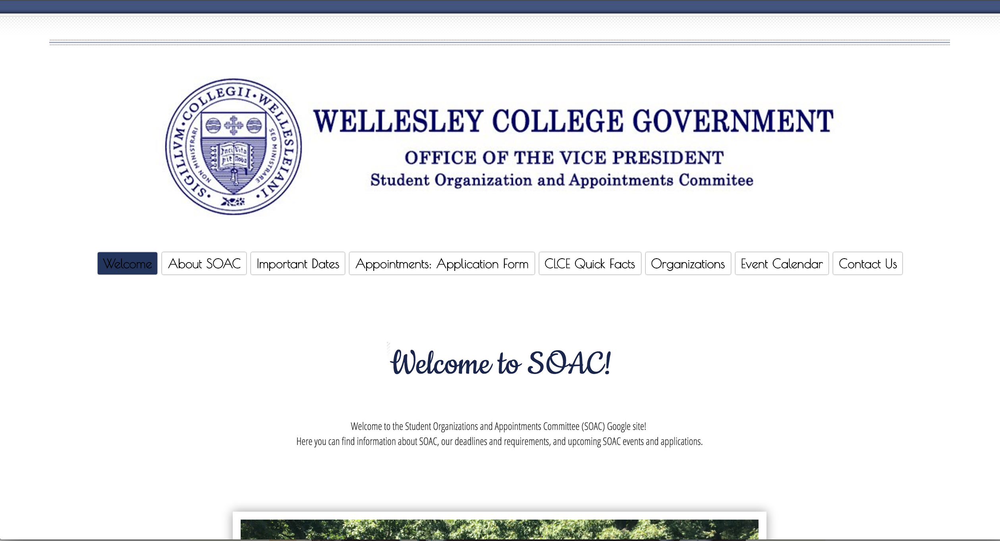
Student Organizations and Appointments Committee Website
I revised this website in order to make the website more organized and in order to provide more resources for the students. The website itself is a Google Site within Wellesley, and thus cannot be accessed by anyone without a Wellesley email. For this website, I:
Implemented a horizontal navigation bar instead of a vertical navigation bar
Embedded Google Gadgets that read from HTML files hosted through Google Drive in order to avoid the limitations of Google Sites (used only for pages that read from Google Spreadsheets or used APIS)
Changed the styling (font, sizing, color)
Organized the information displayed on the site, and made it easier to understand to the user
Created a Members Directory and Organizations Directory (Current Orgs List) which reads in the data of the members/organizations from a Google Spreadsheet (thus utilizing the Google Data API
Created an Events Calendar using the event system's (25Live) API
Outside of the APIs mentioned, I also utilized Google Fonts API and utilized the Bootstrap library. To build the pages, I used HTML, JavaScript, and CSS. You can see some of the pages below:
Personal Website
This is the website you are currently viewing. This website is used to display my previous work, and what makes me a strong candidate for tech-related positions. I worked with HTML, CSS, JQuery, and JavaScript. I used the Bootstrap library and Google Font API as well.
Games & Programs
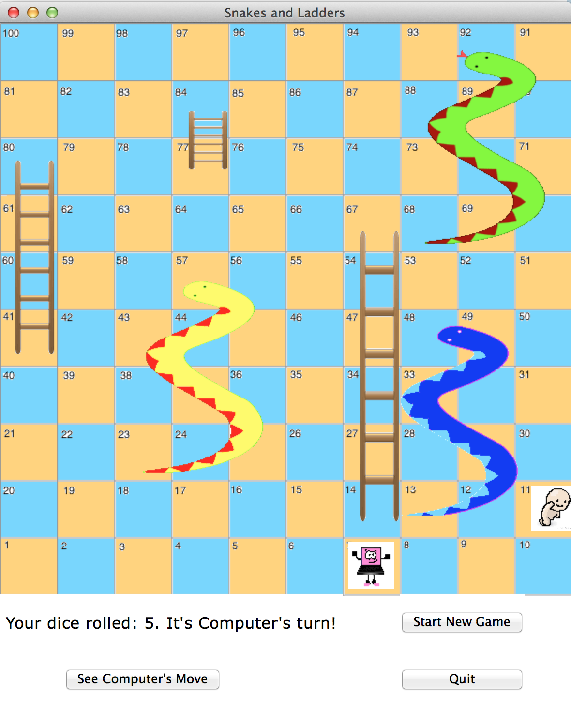
Snakes And Ladders
As part of my Computer Programming and Problem Solving course, I had to create a game utilizing a GUI for my final project. Along with a partner, we developed a computerized vesion of Snakes and Ladders utilizing python.
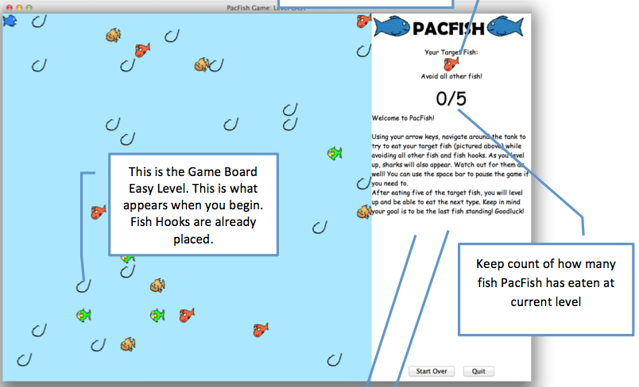
PacFish
As part of my Data Structures course, I had to work with a partner to develop a final project game. Utilizing GUIs and data structures such as Linked Lists and Stacks, we built a game based off of Pac-Man, but with fish. Though, in addition to Pac-Man, as the fish levels up, more computer "enemies" begin appearing, such as sharks. The fish must avoid these "enemies" and collect the coins. I utilized Java to build this game.
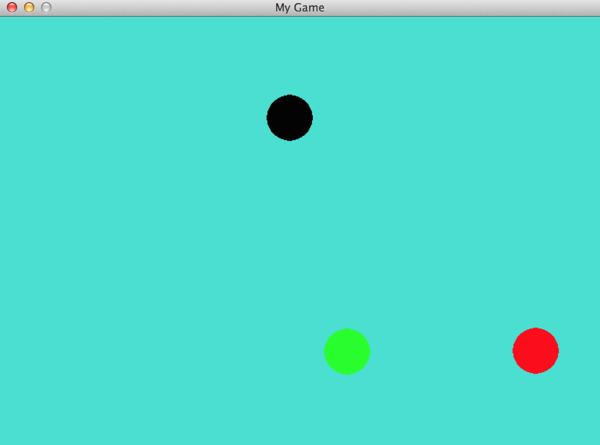
Bouncing Balls
Utilizing python, I explored the Pygame Library by building an interactive game which calls for three balls to bounce all throughout. If a user clicks on the canvas, a random ball will be relocated to the spot where the mouse clicked. The balls also flash different colors. All three balls are generated from a defined class, Ball.
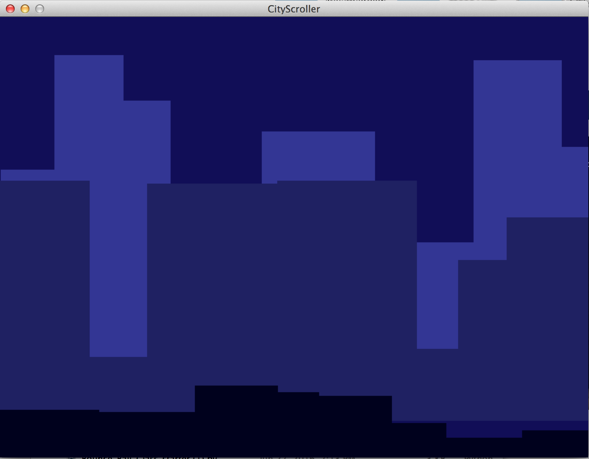
City Scroller
I explored the Pygame Library more by developing a city scene that continually passes, as if you are running or driving along a road and watching the city move past you. There are three different skylines of buildings. In order to do this, I developed the classes Building and Scroller. This used python.
Obamicon
Utilizing python and looking to different libraries of python, I developed a program that takes an image (either command line or raw argument) and changes the pixel colors to resemble that of the coloring of the Obama Campaign. The original picture of the left is:
Here is the program in action on the terminal:
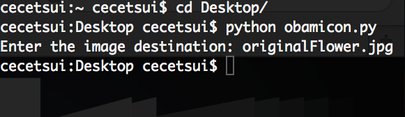
Arduino Programs
Throughout the following projects, I constructed the Arduino and breadboarded myself. I used the Board of Education (BoE) Shield. In order to code the following projects, I utilized C++. Some projects not mentioned: Flashing LED lights, "Dancing" Arduino
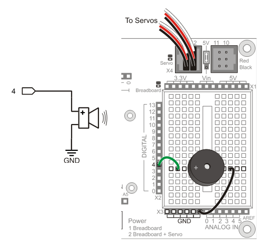
Piezo Song
Playing around with Arduinos, I utilized C++ to build a program that tunes the "Happy Birthday" Song.
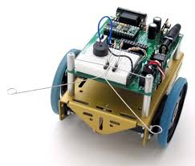
Whisker Bot
The Whisker Bot is an Arduino that uses it's "whiskers" (sensors) to see if it has hit a wall or an object in front of it. If it does, it then reverses itself and turns to the left or right dependent upon which whisker was touched. (i.e. If the bot's left whisker hits a wall, the bot will reverse and turn right.)
Hackathons
WeMentor
During my first Hackathon, my group decided to focus in on mentorship. Our goal was to develop a program that allowed for individuals to meet potential mentors/mentees within their area. It is similar to Tinder, but for creating and developing connections and finding quick ways of networking. My group consisted of four individuals, two (inclusive of myself) of whom had experience with code. Thus, we split into two groups -- one that focused in on front end and one that focused in on backend. I was in the group that focused in on backend. Thus, my partner and I focused on building the program utilizing the LinkedIn API as well as PHP. Although in the day or two we had we did not get far, my partner and I was able to learn more about backend work. You can learn more at https://github.com/cecetsui/wementor.
MIT App Inventor
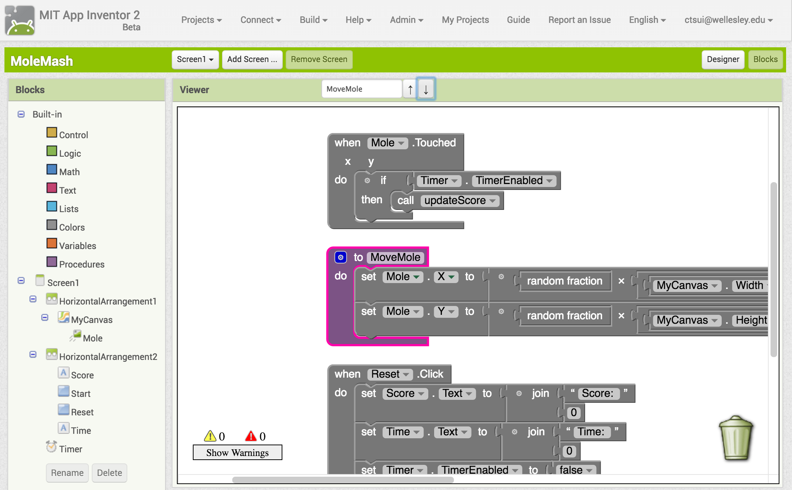
Research with MIT App Inventor
The main goal of my research was to study the user interface and improve upon a factor that can better the user's experience with App Inventor. I focused primarily on the ability to search. Because App Inventor utilizes the Blockly language, where each block of code can take up a lot of space, users find it difficult in searching for a specific block, especially in very complex programs. My project, then, was to develop a search box that allows for search within the program utilizing a search query. Once searched, any block containing that query will remain in color while all others will be greyed out. In addition, the user may use arrow buttons and keys to navigate through these blocks, centering the block in their viewport. In addition, if a block that is searched for is within a parent block that is collapsed, the parent block will uncollapse to show the searched block. In order to accomplish this, I utilized Java and JavaScript.
You can see how it works on block-search-cece.appspot.com and read more about it on my advisor's (Franklyn Turbak) website.
Malloc & Shell
Unfortunately, I could not display the code I wrote for the following projects on my github due to other students who may be taking this course.
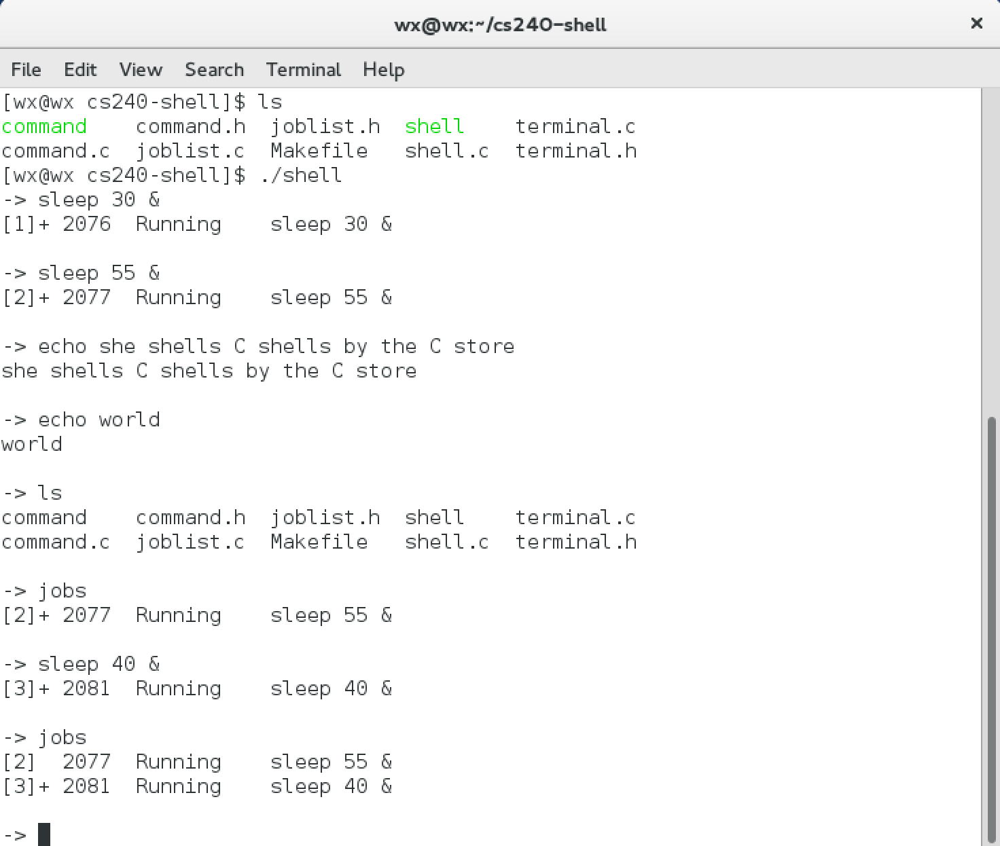
Shell
Within my CS240 course (Introduction to Machine Organization and Laboratory), one of the assigments was to implement or build our own shell using C. This task was inclusive of implementing foreground/background jobs, implementing built-in commands, and focusing in on job management. More information can be found on the assignment page.
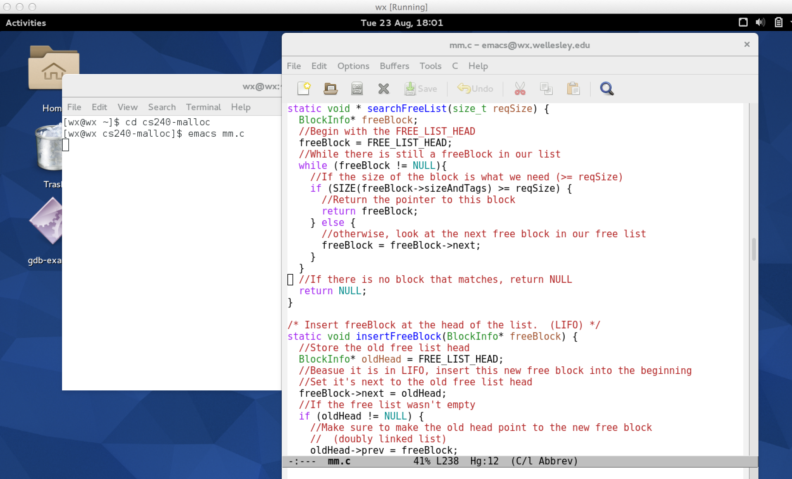
Remembrallocator
Within my CS240 course (Introduction to Machine Organization and Laboratory), one of the assigments was to implement a dynamic memory allocator for C programs (implementing our own "malloc" or "free"). More information can be found on the assignment page.
Android Applications
The below apps were a means of quickly learning about the different features of App Inventor and was part of my study to understand how to improve the interface. These were built during the first few days of my research during the summer of 2015.
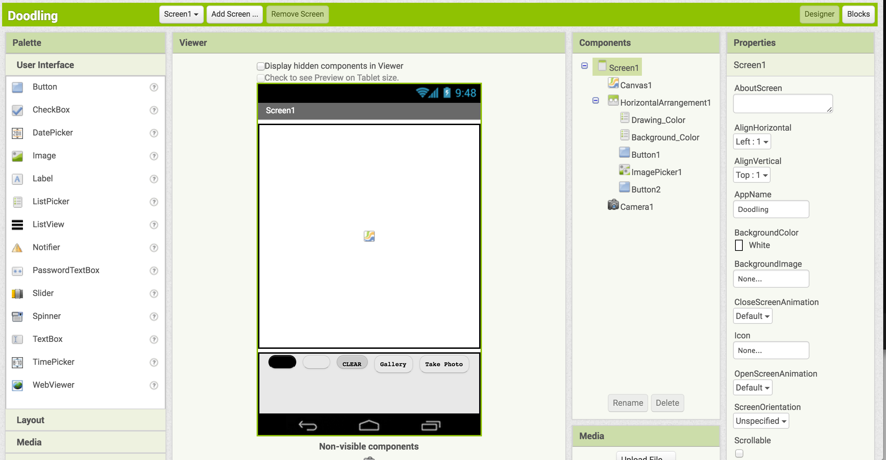
Doodling
This app allows users to "doodle" or draw on photos that they take and save these photos to their phone.
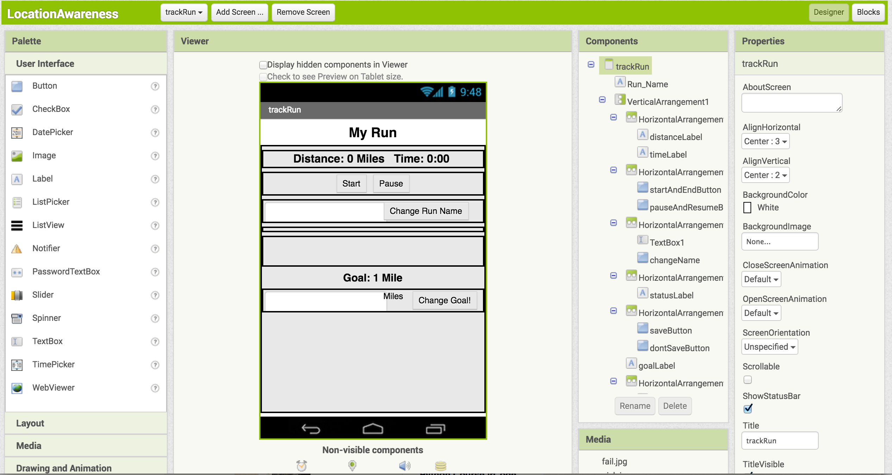
Location Awareness
This app utilizes the location sensor in order to track the distance the user has been walking and/or running in addition to the time the user took in walking/running the distance. As an avid runner, this was an app that I felt was very useful for running purposes (such as Map My Run).
what makes me a great candidate.
I am
bold, creative, and resourceful
. I am
reflective, adaptable, and a problem-solver
. I am
engaging, passionate, and well-spoken
. Most Importantly, I am a
leader
.
resume.
contact me.
Feel free to contact me - I am happy to answer any questions!